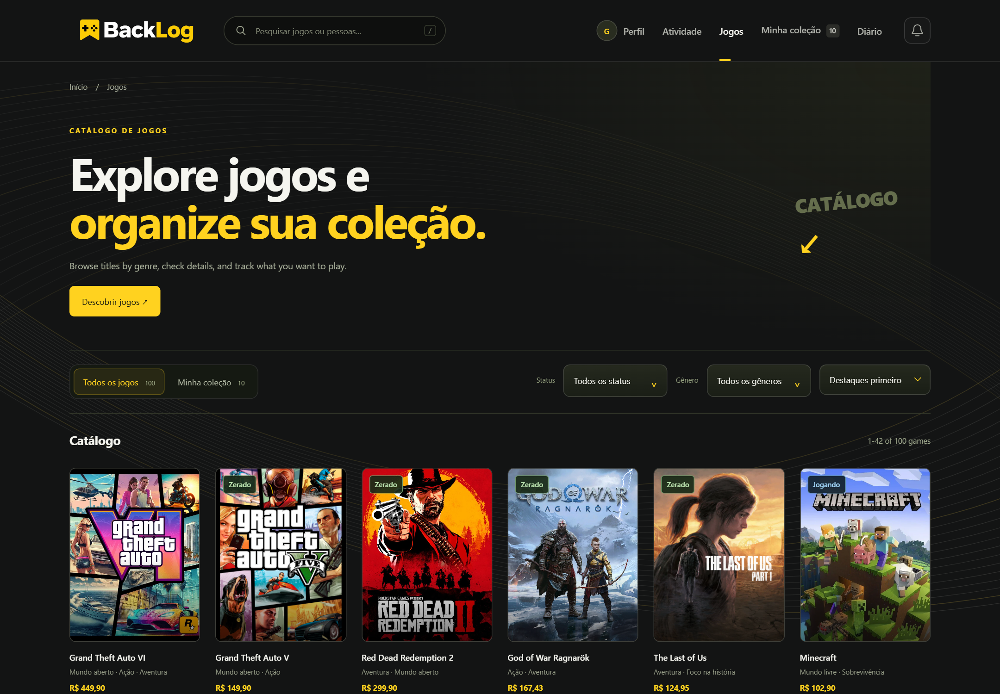

01 / SEUS JOGOS
Da primeira partida
à próxima da fila.
Um catálogo com 100 jogos, busca, filtros e seis status para organizar sua coleção.
CATÁLOGO / BUSCA E FILTROS

JogadoJogandoZeradoPlatinadoDropadoQuero jogar
Um catálogo com 100 jogos, busca, filtros e seis status para organizar sua coleção.
